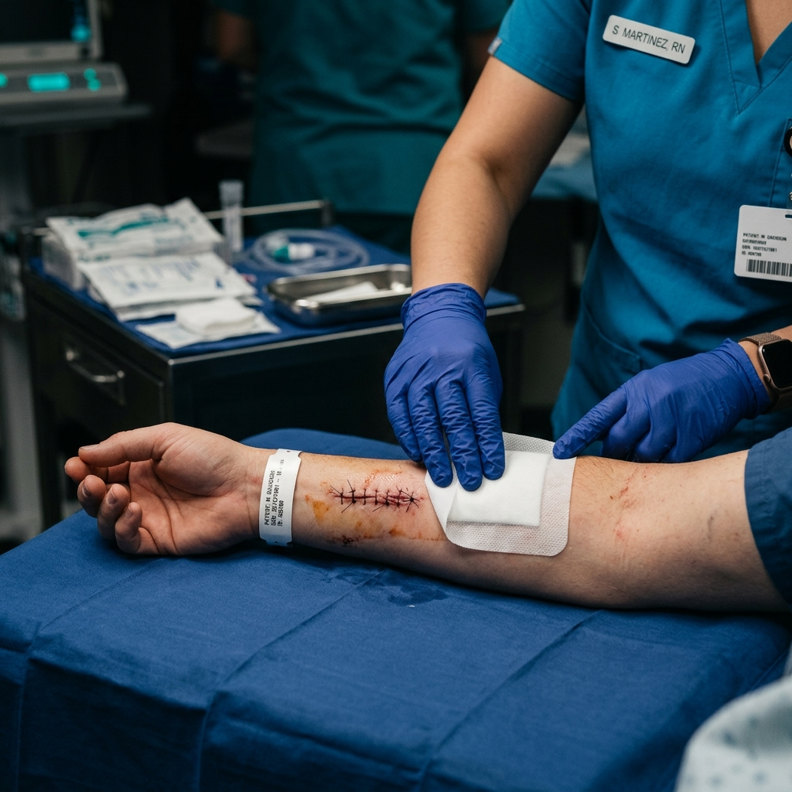

تمريض منزلي في الفيوم — دليلك الشامل لأفضل خدمة في 2025
تمريض منزلي في الفيوم — دليلك الشامل لأفضل خدمة في 2025
مقالات علمية طبية مبسّطة، كُتبت بأسلوب يفهمه الجميع، لتساعدك على العناية بنفسك وبمن تحب في المنزل.
كثير من المرضى يشعرون بالقلق عند الحاجة لخدمة طبية، ويُسارعون للذهاب للمستشفى حتى في الحالات التي يمكن التعامل معها في المنزل. في هذا المقال، نشرح متى يكون التمريض المنزلي الخيار الأذكى صحياً واقتصادياً.
اقرأ المقالتمريض منزلي في الفيوم — دليلك الشامل لأفضل خدمة في 2025

أعراض مرض السكري النوع الثاني — متى تراجع الطبيب فوراً؟
ارتفاع ضغط الدم — الأعراض والعلاج والوقاية الكاملة لعام 2025

تركيب كانيولا في المنزل — متى تحتاجها وكيف تضمن سلامتها؟
رعاية كبار السن في المنزل — دليل الأسرة الشامل 2025

أعراض الكوليسترول المرتفع — 8 علامات تحذيرية لا تتجاهلها
الجلطة الدماغية — الأعراض والإسعافات الأولية وطرق الوقاية
أعراض قصور الغدة الدرقية — 12 علامة شائعة تُشير إليه
علاج الأنيميا — الأسباب والأعراض والحلول الطبيعية والطبية
غيار الجروح في المنزل — الطريقة الصحيحة والأخطاء الشائعة
محلول حديد وريدي في المنزل — من يحتاجه وكيف يُعطى بأمان؟
فيتامين د والنقص — أعراضه وأسبابه وأفضل طرق العلاج
دليل شامل عن الغسيل الكلوي: أنواعه، متى يبدأ، كيف تستعد، والعيش بجودة مع الفشل الكلوي. معلومات طبية موثوقة للمرضى وأسرهم.
ملايين المصريين يعانون من الاكتئاب دون تشخيص. تعرف على أعراض الاكتئاب والقلق، متى تطلب المساعدة، وكيف تبدأ رحلة التعافي.
تعلم كيف تُنقص وزنك بشكل صحي ودائم. 10 طرق علمية مجربة مناسبة للأكل المصري وطبيعة الحياة في مصر.
هشاشة العظام تصيب الملايين في مصر دون أعراض حتى يحدث الكسر. تعرف على عوامل الخطر وأفضل طرق الوقاية والعلاج.
دليل الأهل الشامل لربو الأطفال: الأعراض التحذيرية، المحفزات الشائعة، كيف تُقلل نوبات الربو، ومتى تذهب للطوارئ.
اكتشف 12 طريقة علمية حقيقية لتقوية جهاز المناعة. ما الذي ثبتت فاعليته وما هي الأساطير الشائعة؟ دليل موثوق للمصريين.
دليل شامل عن القسطرة البولية المنزلية: الرعاية اليومية، كيف تمنع العدوى، متى تغيرها، وكيف تحصل على خدمة التركيب في الفيوم.
دليل عملي لأسر مرضى السكري: كيف تتابع قراءات السكر، متى تتدخل، كيف تُقدم الدعم الصحيح، وخدمات المتابعة المنزلية.
اكتئاب ما بعد الولادة يصيب 1 من كل 8 أمهات. تعرف على الأعراض الحقيقية وكيف تُميزها عن "كآبة الأمومة" العابرة، ومتى تطلب مساعدة.
التهاب المفاصل الروماتويدي ليس مجرد ألم — هو مرض مناعي معقد. تعلم كيف تتعايش معه، أحدث علاجاته، وكيف تُقلل نوباته.
كبار السن لا يشعرون بالعطش كثيراً رغم احتياجهم للماء. تعرف على علامات الجفاف الخفية عند المسنين وكيف تمنعه قبل أن يتحول لأزمة.
30% من النساء في مصر يعانين من نقص الحديد. تعرفي على الأسباب الخاصة بالمرأة، الأعراض، وأفضل طرق العلاج الطبيعية والطبية.
اعتلال الكلى السكري أحد أخطر مضاعفات السكري. تعرف كيف يتطور، أعراضه المبكرة، وأهم خطوات الوقاية للحفاظ على وظائف كليتيك.
كيور توفر لك ممرضاً معتمداً في 15 دقيقة — بأسعار ثابتة وشفافة، لأن صحتك لا تنتظر.